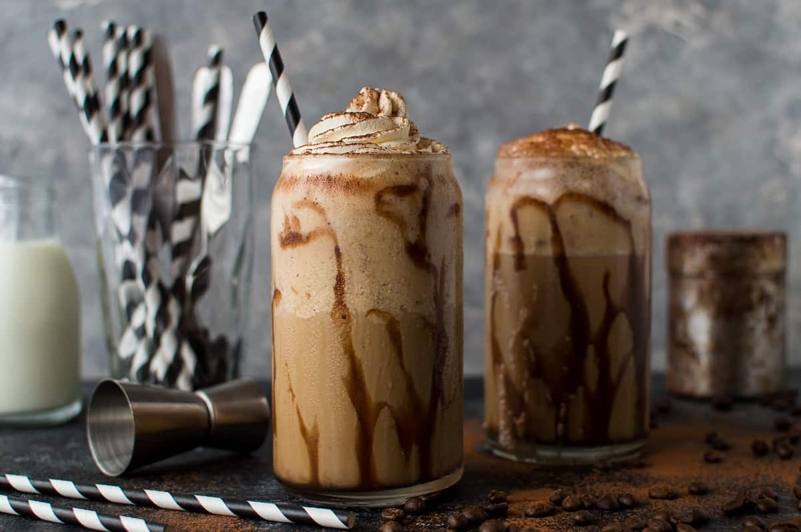

Coffee Milkshake (with Ice Cream)

Description
In the scorching Indian summers, we seek solace in refreshing cold treats like Watermelon Juice, Mango Shake, Lassi, Banana Shakes, and Falooda. Yet, amidst all these delectable options, what's often absent is that delightful kick of awakening caffeine.
This simple milkshake recipe marries the best of both worlds - the invigorating punch of coffee and the indulgence of dessert, all in one convenient cup. Beginning with my Instant Cold Coffee base, I introduce a blend of ice and ice cream, elevating it to a level of icy café-style frappé perfection.
Ingredients
- Instant Coffee
- Water
- Sugar
- Milk
- Vanilla Ice Cream
- Ice
Steps
- In a small bowl, add 1.5 tablespoons of instant coffee.
- Add ¼ cup warm or slightly hot water. Mix very well with a spoon.
- Now pour this mixture in a blender jar.
- Add 4 tablespoons of sugar, or per your taste. If you prefer to cut back on dishes, add the coffee, warm water and sugar directly to the blender jar.
- Blend for a minute or till the coffee solution becomes frothy and the color lightens a bit.
- Add 1 or 2 vanilla ice cream scoops.
- Pour in 2.5 cups chilled milk.
- Blend once more till everything is mixed well and you get a nice froth on top.
- Your coffee shake with ice cream is ready to be served!